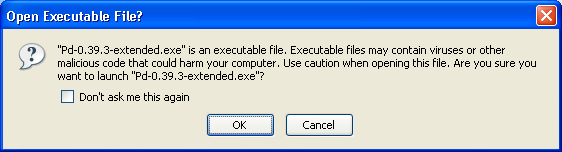
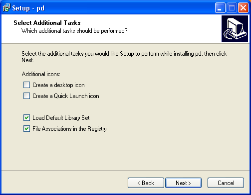
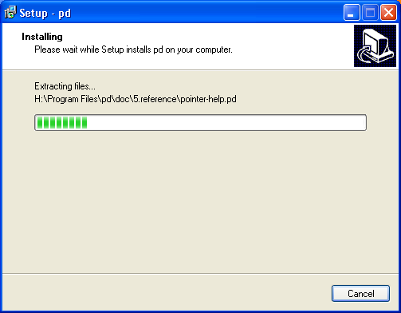
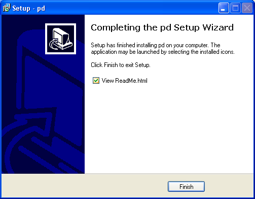

Installing on Windows
Software name : Pd-extended
Homepage : http://puredata.info
Software version used for this installation : Pd-extended 0.39-3
Operating System use for this installation : Microsoft Windows XP
Recommended Software : Windows 2000 or later
Recommended Hardware : 300 Mhz processor (CPU) minimum
To begin the installation visit the download page for Pure Data ( http://puredata.info/downloads ) :

You can download either Miller Puckette's version of Pure Data, or Pd-extended. Miller's version of Pure Data is called "Pd-vanilla" because it has just the basic minimum set of functionality. It does not contain any external libraries or any of the features developed by the Pure Data community which are included in Pd-extended. We will use Pd-extended for this manual, so chose your installer from the "Pd-extended" section of this webpage.
In the first group of links under "pd-extended'"click on the link marked "Microsoft Windows (2000/XP/Vista)" and you should see something like this (this example using Firefox) :

Press "OK" and the download should proceed, leaving you (hopefully) with a dialog box that informs you the download is complete. If you are using Firefox then the dialog may look something like this:

Now you can either browse your computer to look for the installer icon which will look something like this :

you can double click on this icon to start the installation process. Alternatively, you may wish to click Open in the download dialog :

If you choose to do it this way then you may see the following window :

if you see this click "OK" and continue. Either of the steps above should put you in the same place, which is this :

now press "Next >" and the installation process will begin. You will see this screen :

This is the standard license page. If you don't agree with the license you can't install the software. So, my recommendation is - click on the green button next to 'I accept the agreement' and then press 'Next >'. You will see the following :

The above assists you in deciding where to install Pd-extended. Unless you have a good reason to, leave the default settings as they are. If you have a good reason, and know what you are doing, you can press 'Browse' and choose another place to install Pd-extended on your computer. If you decide to change the defaults, or keep them, youy must then press 'Next >' to continue :
The above screen is merely choosing what to call the installation in the Windows 'Start Menu', Just leave it as it is and press 'Next >'.

You really don't want to uncheck the last two boxes as they are necessary for the installation. The first two choices are merely cosmetic and effect the 'shortcut' icons. It doesn't matter if you check these or leave them as they are. When you are ready press 'Next>'.

The above is the summary window. Press 'Install' and the installation will commence. It might take some time depending on how quick your computer is. While you wait the installer will present you with progress bars :

Then when the installation is complete you will see a final screen :

If you click 'Finish' your browser will open the (rather unattractive) Read Me page :
It is rather uncompelling material but it does have one useful hint...
"To make sure that all of the included libraries are loaded when Pd runs, double-click C:\Program Files\pd\pd-settings.reg"
This is rather important, so you need to open the 'Program Files' in your file browser. Usually you can right-click on the Windows Start Menu to open a file browser :

Then you will see something like this:

Double-click on 'Program Files' and the the directory called 'pd', in this window you should see a file called 'pd-settings':
Double-click on this file and you will see the following :

Press 'Yes' :

Then press 'OK' and that window will disappear. Now you probably want to actually open Pure Data. Click on the Windows Start Menu and slide across to 'All Programs' and 'Pure Data', then finally again to the 'Pure Data' icon :

Release the mouse button and Pure Data should open :